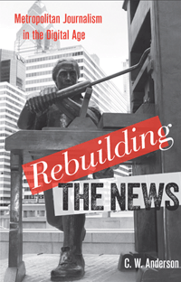

<body bgcolor="#FFFFFF" text="#000000" link="#0000FF" vlink="#CC0000" alink="#CC0000"><center><hr width="350" size="1" align="center" noshade>An inside account of dramatic changes in journalism in Philadelphia news organizations<hr width="350" size="1" align="center" noshade><p><a href="https://cdcshoppingcart.uchicago.edu/Cart/ChicagoBook.aspx?ISBN=9781439909331&&PRESS=temple" target="_top">Buy this book!</a> | <a href="https://cdcshoppingcart.uchicago.edu/Cart/Cart.aspx?PRESS=temple" target="_top">View Cart</a> | <a href="https://cdcshoppingcart.uchicago.edu/Cart/Cart.aspx?PRESS=temple" target="_top">Check Out</a></p><p></p></center><!--none//--><h1>Rebuilding the News</h1>
<H2>Metropolitan Journalism in the Digital Age</H2>
<h3>C.W. Anderson</h3>
<P>cloth 1-4399-0933-4 $85.50, Jan 13, <FONT COLOR=#990033>Available</FONT>
<br>paper 1-4399-0934-2 $28.95, Jan 13, <FONT COLOR=#990033>Available</FONT>
<br>Electronic Book 1-4399-0935-0 $28.95 <FONT COLOR=#990033>Available</FONT>
<BR> 236 pp
6x9
1&nbsp;table 2&nbsp;figures 16&nbsp;halftones
</P><P>Breaking down the walls of the traditional newsroom, <i>Rebuilding the News</i> traces the evolution of news reporting as it moves from print to online. As the business models of newspapers have collapsed, author C. W. Anderson chronicles how bloggers, citizen journalists, and social networks are implicated in the massive changes confronting journalism.
<P>Through a combination of local newsroom fieldwork, social-network analysis, and online archival research, <i>Rebuilding the News</i> places the current shifts in news production in socio-historical context. Focusing on the <i>Philadelphia Inquirer</i>, the <i>Philadelphia Daily News</i>, Anderson presents a gripping case study of how these papers have struggled to adapt to emerging economic, social, and technological realities.
<P>As he explores the organizational, networked culture of journalism, Anderson lays bare questions about the future of news-oriented media and its evolving relationship with "the public" in the digital age.
<BR>&nbsp;<h2>Excerpt</h2><P>Excerpt available at <a href="http://www.temple.edu/tempress">www.temple.edu/tempress</a></p>
<BR>&nbsp;<h2>Reviews</h2>
<p><i>"Anderson explores whether and how emerging online news has changed the practice of reporting. Using a variety of research techniques including ethnography, social-network analysis, and archival content research, he takes an in-depth look at one city (Philadelphia) to study changes in journalism from the 1990s to the present.... Scholars in journalism and organization sociology will appreciate Anderson’s meticulous methodology and his analysis of the responses of journalists and news organizations to a rapidly changing environment."</i> <br>&#151<b>Library Journal</b>
<p><i>"[A]n in-depth assessment of what is happening in one major urban region, and how different media are responding to change, technical and otherwise."</i> <br>&#151<b><i>Communication Booknotes Quarterly</i></b>
<p><i>"American journalism's death spiral is by now a well-known and much-lamented phenomenon. But precious few accounts offer us on-the-ground views of how journalistic institutions are actually changing. C.W. Anderson offers us such a vantage point in his book </i>Rebuilding the News<i>. He provides a close chronicle of local news organizations’ experimentations and permutations in their attempts to adapt to an online environment. Anderson captures this transitional moment for journalism with a narrative based on an ethnographic study of Philadelphia media institutions.... [He] gives us a thick description of news work practices in the digital age.... This is an important book and an enjoyable read. Anderson's writing is lively, and his analysis of journalism's shifting practices is often provocative. His work advances the ongoing discussion about our rapidly changing news institutions, and his treatment of his subject matter is careful and nuanced. Overlapping with science and technology studies, this book is a significant contribution to the growing subfield of journalism studies as well as ethnographic and sociological scholarship more generally. It is a worthwhile read for anyone who has a stake in the future of journalism. In other words, we should all be reading this book."</i> <br>&#151<b><i>Political Communication</i></b>
<p><i>"For keen insights into why news organizations are struggling so mightily to adapt to a networked environment, you won’t do better than this splendid ethnographic study of the Philadelphia news ‘ecosystem’. In his rich depiction of the people and practices behind local blogs and independent media outlets as well as the websites of the city’s (barely) surviving sister newspapers, the </i>Inquirer<i> and </i>Daily News<i>, Anderson combines sharp observations with thoughtful analysis to show just how precarious newswork today is – and the difficulty of making it less so..... This is a fine book: solidly researched, engagingly written, highly informative, and intellectually stimulating. And, of course, the topic matters."</i> <br>&#151<b><i>Journalism</i></b>
<p><i>"Chris Anderson's book represents a major contribution in understanding the profound changes in the landscape of news production and in showing us </i>how<i> to study these changes.... It is part of a new and important wave of ethnographic research which documents the lived experience of newsworkers coming to terms with a radically altered media landscape....What sets Anderson's book apart is its emphasis on seeing news organizations not as isolated and singular institutions, but rather as part of a larger journalistic 'ecosystem.'... Overall, Anderson's book is a significant intervention into debates in journalism studies, offering several lasting and important contributions."</i> <br>&#151<b><i>International Journal of Communication</i></b>
<p><i>"Anderson’s captivating book provides a close chronicle of local news organizations’ decade-long losing battle to adapt to an increasingly online environment.... </i>Rebuilding the News’<i> detailed description of journalistic work in the digital age belies its title."</i> <br>&#151<b><i>Public Books</i></b>
<p><i>"Anderson’s study will be a touchstone.... [The] themes [he addresses] will occupy the attention of news scholars for some time. Anderson has artfully and perceptively raised them for scrutiny. In so doing, he has built a useful foundation for what will undoubtedly be a growing body of work in this area.... This book is an excellent and ground-breaking contribution to the tradition of news ethnography."</i> <br>&#151<b><i>Digital Journalism</i></b>
<BR>&nbsp;<P><p>In this <a href="http://www.youtube.com/watch?v=bK2vCJYBX0A&feature=youtu.be"target="new">video clip</a>, C.W. Anderson talking about his new book <i>Rebuilding the News</i> on PA Books.</p></P><BR>&nbsp;<br>
<h2>Contents</h2><P>
<p>Acknowledgments
<br>Timeline of Digital News: Developments in Philadelphia and Nationally
<br>Introduction: Local Journalism on the Brink</p>
<p><b>Part I. How Local Journalism Went Online</b>
<br>1. Philadelphia’s Newspapers Go Online (1997–2008)
<br>2. Alternate Paths in the Transition to Online Journalism (2000–2008)</p>
<p><b>Part II. Local Newswork in the Digital Age</b>
<br>3. A Day in the Life of Twenty-First-Century Journalism (July 16, 2008)
<br>4. How News Circulates Online: The Short, Happy News Life of the Francisville Four (June 2008)</p>
<p><b>Part III. Building News Networks</b>
<br>5. What We Have Here Is a Failure to Collaborate (2005–2009)
<br>6. Dark Days and Green Shoots (2009–2011)</p>
<p>Conclusion: Reporting and the Public in the Digital Age
<br>Appendix: Methodology
<br>Notes
<br>Selected Bibliography
<br>Index</p>
</P><BR>&nbsp;<H2>About the Author(s)</H2>
<P><b>C.W. Anderson</b> is an Assistant Professor of Media Culture at the College of Staten Island (City University of New York.) He has published in numerous academic journals, and writes occasionally for the Nieman Journalism Lab and the <i>Atlantic Online</i>. He has contributed chapters to edited volumes, including <i>The Social Media Reader</i>, <i>Making Our Media</i>, <i>Making Online News</i>, and the <i>Journalism Studies Handbook</i>.</P>
<BR><H2>Subject Categories</H2>
<p><A HREF="/tempress/mass_media.html" TARGET="_top">Mass Media and Communications</a>
<BR><A HREF="/tempress/philly.html" TARGET="_top">Philadelphia Region</a>
<BR><A HREF="/tempress/technology.html" TARGET="_top">Technology</a>
</p>
<p align="center"><a href="https://cdcshoppingcart.uchicago.edu/Cart/ChicagoBook.aspx?ISBN=9781439909331&&PRESS=temple" target="_top">Buy this book!</a> | <a href="https://cdcshoppingcart.uchicago.edu/Cart/Cart.aspx?PRESS=temple" target="_top">View Cart</a> | <a href="https://cdcshoppingcart.uchicago.edu/Cart/Cart.aspx?PRESS=temple" target="_top">Check Out</a></p><p><font face="Arial" size="1"><a href="copyright.html" onMouseOver="window.status='Web Copyright Policy';return true;" onMouseOut="window.status=''" title="Web Copyright Policy">&copy;</a> 2015 <a href="http://www.temple.edu" target="new" onMouseOver="window.status='Link to Temple University home page';return true;" onMouseOut="window.status=''" title="Link to Temple University home page">Temple University</a>. All Rights Reserved. http://www.temple.edu/tempress/titles/2234_reg.html</font></p>